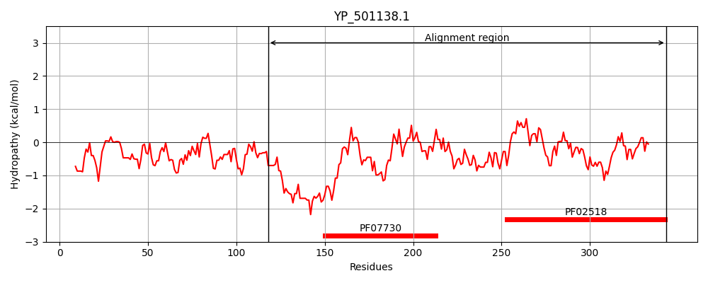
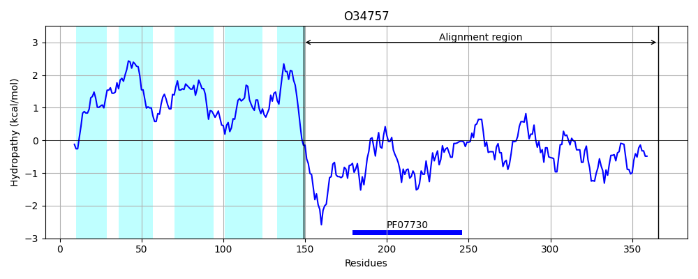
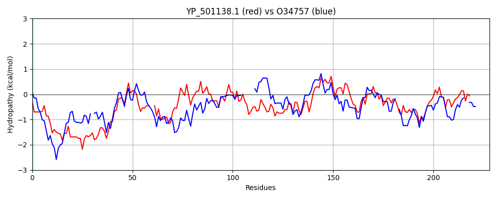

Hit Accession: O34757
Hit TCID: 9.B.238.3.5
Hit Description: gnl|BL_ORD_ID|7150 gnl|TC-DB|O34757|9.B.238.3.5 Sensor histidine kinase DesK OS=Bacillus subtilis (strain 168) OX=224308 GN=desK PE=1 SV=1
Mach Len: 228
e:0.000000
Query TMS Count : 0
Hit TMS Count: 5
TMS-Overlap Score: 0.000000
Predicted Substrates:CHEBI:8526;protein polypeptide chain, CHEBI:2359;ATP
BLAST Alignment:
Score: 165 , Bit scores: 68 bits, E-value: 8.3e-13, Alignment length: 228, Percentage identity: 24
Query: 118 FTLQNVSSQIEQQEKLHQQRMMRKTISAQENERKRISRELHDSVIQEMLNVDVQLRLLK--YQEDTTKLLEDAENIEYIVAKLIDDIRNMSVELRPASLDDLGLEAAFKSYFKQFEENYGIKIIYTSNIKNTRFDSDIETVVYRVVQEAILNALKYADVNEINVGIRQTGRHLVAEVIDAGNGFDPSSKPKGSGLGLYGMNERAELVSGSVNIETKIGEGTNVTLNIP 343
F++++ + +EKL + E ER+RI+R+LHD++ Q++ + ++ L + +D + + ++++ ++++R + ++ L D + KQ E I IY E ++ ++EA+ N +K++ V I+Q + +V V D G F G GL GM ER E +GS++I+T+ GT +T+ IP
Sbjct: 149 FSIKSRKERERLEEKLEDANERIAELVKLE-ERQRIARDLHDTLGQKLSLIGLKSDLARKLIYKDPEQAARELKSVQQTARTSLNEVRKIVSSMKGIRLKDELIN------IKQILEAADIMFIYEEEKWPENISLLNENILSMCLKEAVTNVVKHSQAKTCRVDIQQLWKEVVITVSDDGT-FKGEENSFSKGHGLLGMRERLEFANGSLHIDTE--NGTKLTMAIP 366 | Protein Hydropathy Plots: |
|---|
|  |  |
Pairwise Alignment-Hydropathy Plot:
|
|---|
|  |